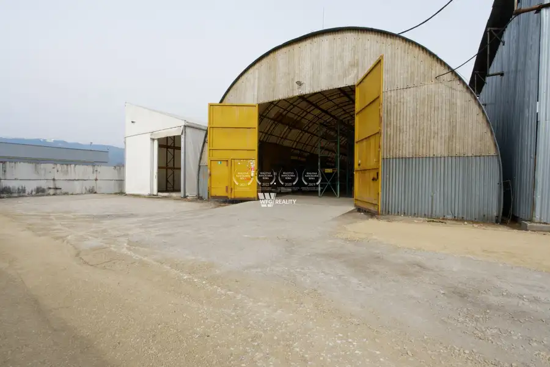
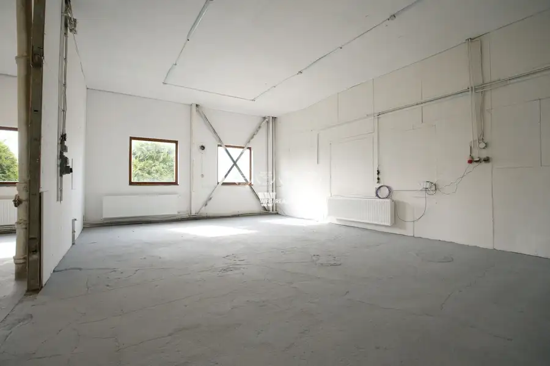
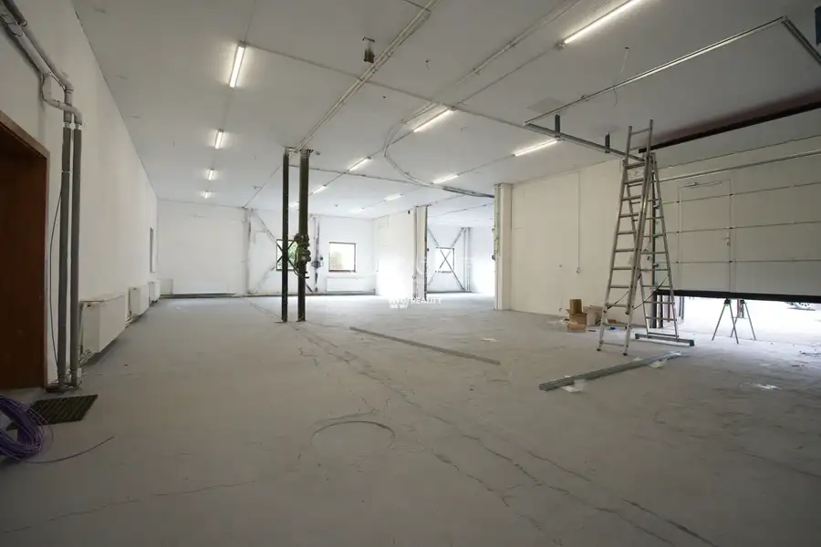
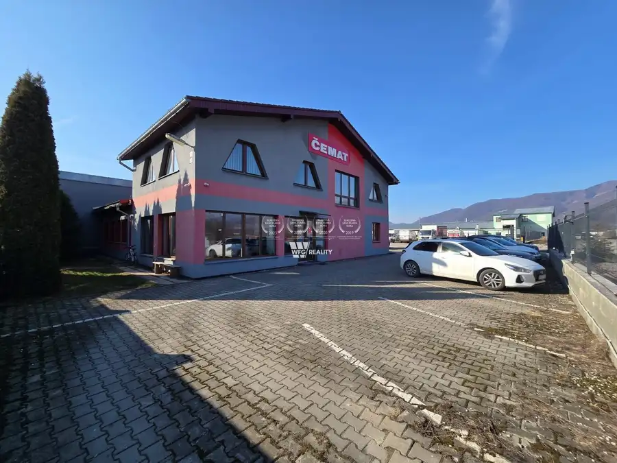
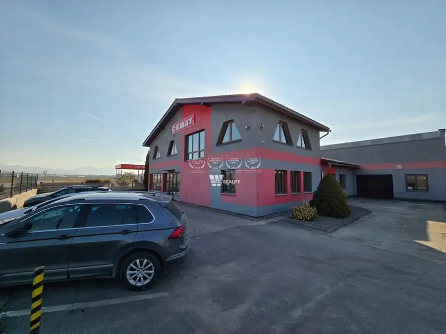
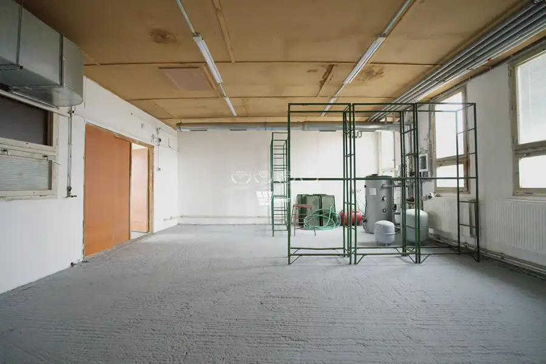

Prenájom skladovacieho, dielenského a admin. areálu - Martin
Martin







- Plocha2080 m²
- StavČiastočná rekonštrukcia
O nehnuteľnosti
Exkluzívne Vám ponúkame na prenájom rozsiahly priemyselný areál vhodný na skladovanie, výrobu alebo inú podnikateľskú činnosť. Súčasťou areálu je aj dostatočne veľké administratívne zázemie, ktoré zabezpečuje komfortné podmienky pre chod firmy.Areál je vhodný na dlhodobý prenájom. Priestory sú voľné a pripravené pre nového nájomcu alebo nájomcov.Nehnuteľnosť sa nachádza vo vyhľadávanej priemyselnej lokalite s výbornou dopravnou dostupnosťou, približne 1 km od nájazdu na diaľnicu. Možnosť prenajať aj po častiach.Základné parametre:celková rozloha areálu: cca 5 300 m²zastavaná plocha: cca 2 100 m²elektrina: 400 V vedenie s dostatočnou kapacitounízke prevádzkové náklady – energie hradí nájomcaObjekty v areáli:Hala č. 1 – administratíva (455 m²): kancelárie, zasadacia miestnosť, sociálne zázemie so sprchou, kuchynka, archív 70 m², klimatizácia, kamerový systém, parkovanie cca 15 áutHala č. 2 – výrobná (627m2): vykurovaná, betónová podlaha, 400 V, lakovňa, montážne dielne, sociálne zázemieHala č. 3 – sklad (91m2): plechová hala, veľké brány, betónová podlahaHala č. 4 – oblúková (629m2): nová betónová podlaha (25 kg/m³), nosnosť 10 t/m², LED, 400 VHala č. 5 – LMH (315m2): PVC opláštenie, betónová podlaha (25 kg/m³), LED, posuvné vrátaMožnosť budúceho odkúpenia areálu a výstavby ďalšej haly cca 1000m2.Vhodné pre výrobu, logistiku alebo kombináciu skladových a administratívnych priestorov.Nezmeškajte túto skvelú príležitosť! Zavolajte nám a získajte viac informácií o tomto areáli v Martine.Ak Vás táto jedinečná ponuka zaujala, neváhajte ma kontaktovať na tel. čísle 0905 809 919 alebo e-mailom balko@wfg.skNaša spoločnosť poskytuje služby realitného sprostredkovania a poradenstva už viac ako 15 rokov. Sme ocenení Realitnou úniou ako Realitná kancelária roka pre stredoslovenský región za rok 2019 a 2020 a pre Žilinský kraj za rok 2022 a 2023. Poďte do toho s nami a staňte sa našim ďalším spokojným klientom.
Parametre
- Bezpečnosť
- Alarm, Kamerový systém, Bezpečnostné dvere, Elektronická brána, Videovrátnik
- Doprava
- Diaľkový autobus, Cyklistická infraštruktúra, Vlak, Diaľnica, Letisko, Cesta, MHD, Trolejbus
- Druh
- Skladový objekt
- Dátum zverejnenia
- 10. 05. 2026
- Elektrina
- Na pozemku - 230 V, Na pozemku - 400 V
- Energetický certifikát budovy
- nie je
- Odpadové vody
- Na pozemku - Kanalizácia
- Plyn
- Pri pozemku
- Počet nadzemných podlaží
- 2
- Prístupová komunikácia
- Asfaltová
- Rok výstavby
- 1990
- Stav nehnuteľnosti
- Čiastočná rekonštrukcia
- Telekomunikácie
- Internet, Telefón
- Typ
- Prenájom
- Typ konštrukcie
- Železobetónová, Tehlová, Skeletová
- Voda
- Na pozemku - Diaľkový vodovod
- Vybavenie
- Technická miestnosť, Vyhradené parkovanie, Bezbariérový prístup, Dielňa, Recepcia, Záhrada, Zabezpečovacie zariadenie
- Vybavenie objektu
- Štandardné
- Vykurovanie
- Ústredné, Tepelné čerpadlo
- Zastavaná plocha
- 1985 m²
- Úžitková plocha
- 2080 m²
Kde to je


Mohlo by Vás zaujímať
 Chata, drevenica, zrubNové
665 000 €NOVOSTAVBA_Chalet ako z Álp priamo na svahu s pozemkom /575m2/ súkromný wellness a ski in-ski out_Oravská Lesná
Oravská Lesná
350 m²
Chata, drevenica, zrubNové
665 000 €NOVOSTAVBA_Chalet ako z Álp priamo na svahu s pozemkom /575m2/ súkromný wellness a ski in-ski out_Oravská Lesná
Oravská Lesná
350 m²
 BytNové
238 000 €NOVOSTAVBA_3 izb. byt s balkónom a parkovaním /81m2/ Kamence - Kysucké Nové Mesto
Kysucké Nové Mesto
3-izbový81 m²3. podlažie
BytNové
238 000 €NOVOSTAVBA_3 izb. byt s balkónom a parkovaním /81m2/ Kamence - Kysucké Nové Mesto
Kysucké Nové Mesto
3-izbový81 m²3. podlažie
 BytNové
161 900 €NOVOSTAVBA_1 izb. apart. s balkónom "č.307" /37m2/ CENTRUM - Žilina
Žilina
1-izbový37 m²3. podlažie
BytNové
161 900 €NOVOSTAVBA_1 izb. apart. s balkónom "č.307" /37m2/ CENTRUM - Žilina
Žilina
1-izbový37 m²3. podlažie